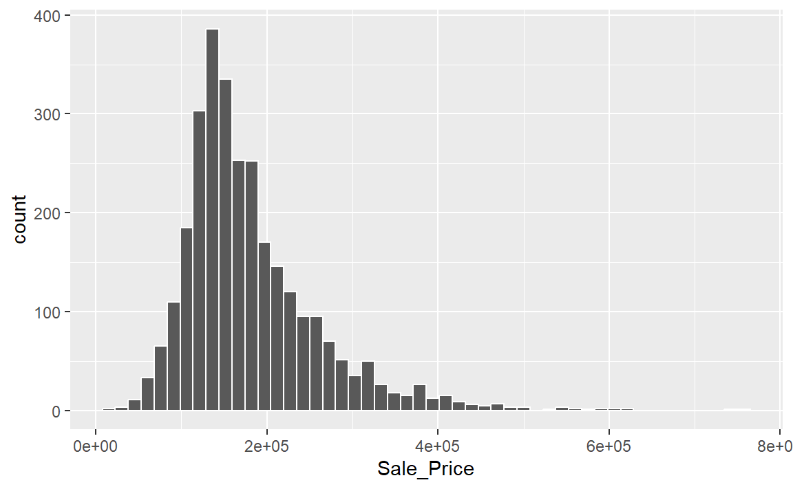
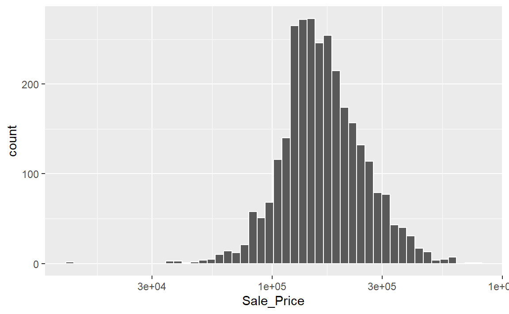
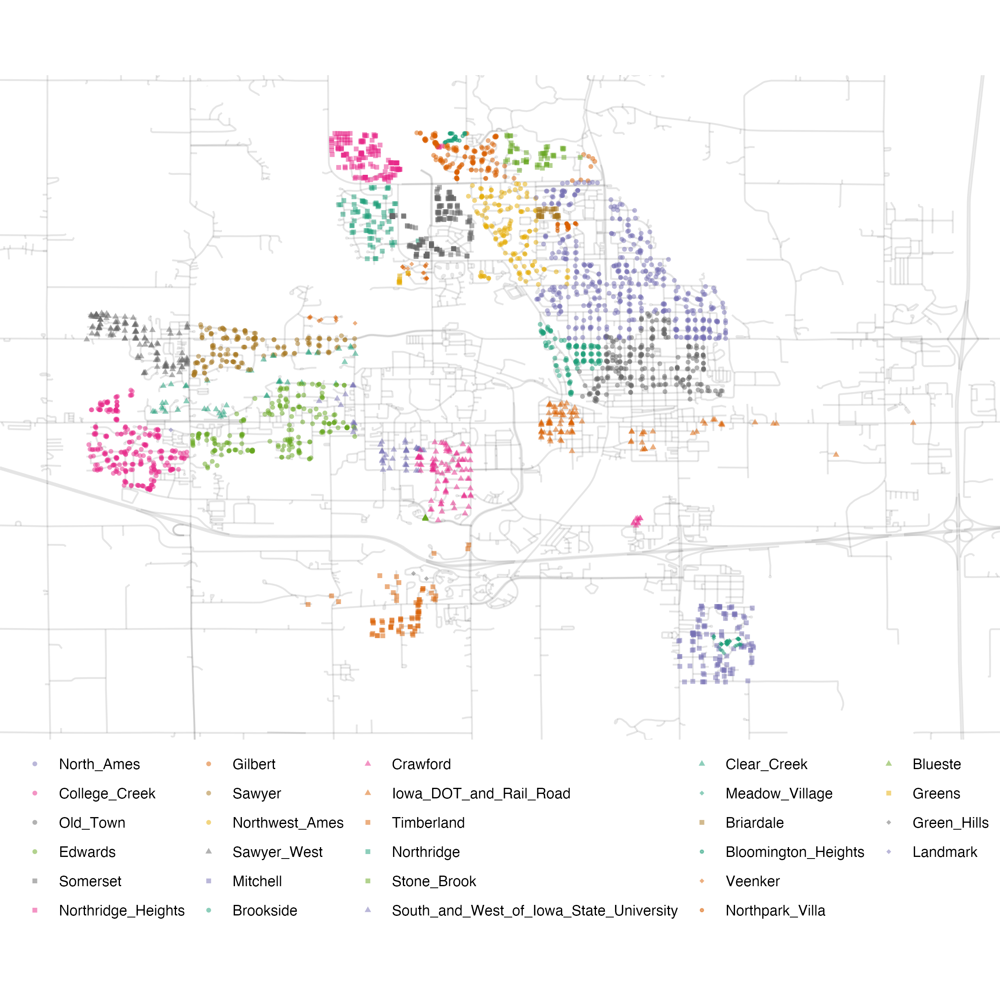
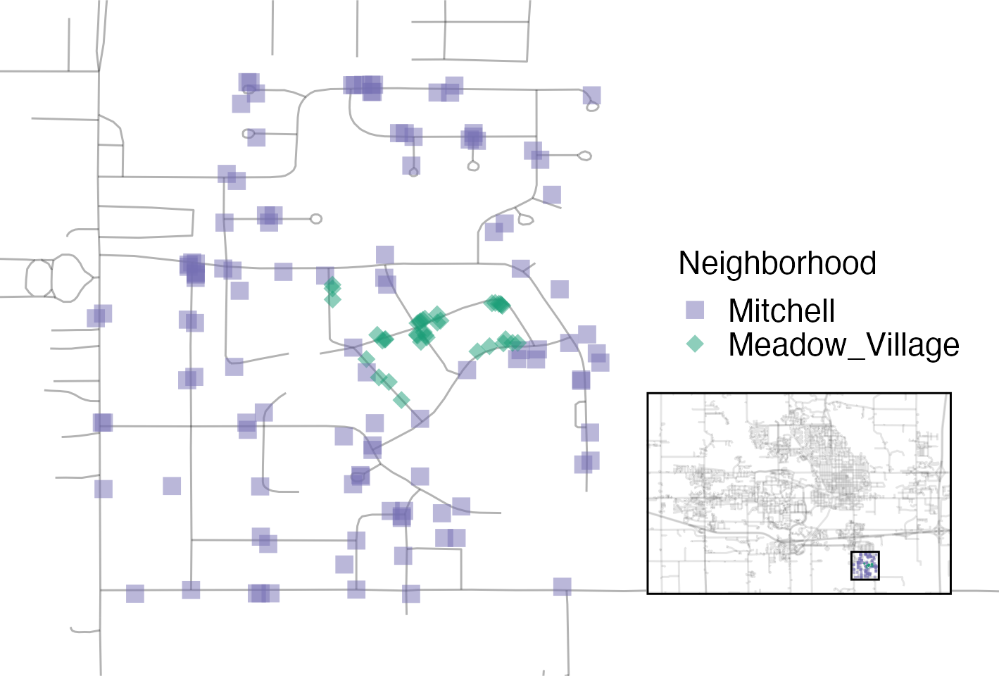

library(tidymodels)
#> ── Attaching packages ─────────────────────────────────── tidymodels 1.4.1 ──
#> ✔ broom 1.0.9 ✔ recipes 1.3.1
#> ✔ dials 1.4.2 ✔ rsample 1.3.1
#> ✔ dplyr 1.1.4 ✔ tailor 0.1.0
#> ✔ ggplot2 3.5.2 ✔ tidyr 1.3.1
#> ✔ infer 1.0.9 ✔ tune 2.0.0
#> ✔ modeldata 1.5.1 ✔ workflows 1.3.0
#> ✔ parsnip 1.3.3 ✔ workflowsets 1.1.1
#> ✔ purrr 1.1.0 ✔ yardstick 1.3.2
#> ── Conflicts ────────────────────────────────────── tidymodels_conflicts() ──
#> ✖ purrr::discard() masks scales::discard()
#> ✖ dplyr::filter() masks stats::filter()
#> ✖ dplyr::lag() masks stats::lag()
#> ✖ recipes::step() masks stats::step()
tidymodels_prefer()
# library(modeldata) # This is also loaded by the tidymodels package
data(ames)
# or, in one line:
data(ames, package = "modeldata")
dim(ames)
#> [1] 2930 744 The Ames Housing Data
在本章中，我们将介绍Ames房产数据集（De Cock 2011），该数据集贯穿整本书。探索性数据分析（EDA），就像我们在本章中所进行的那样，是构建可靠模型的重要第一步。该数据集包含Ames Iowa的2930处房产信息，包括与以下方面相关的列：
- 房屋特征（卧室、车库、壁炉、游泳池、门廊等）
- 位置（社区）
- 地块信息（分区、形状、大小等）
- 状况和质量评级
- 售价
我们的建模目标是根据我们掌握的其他信息（例如房屋的特征和位置）来预测房屋的售价。
原始住房数据由De Cock（2011）提供，但在本书的分析中，我们使用的是modeldata包中经过转换且可用的版本。此版本对数据进行了若干修改和改进。例如，确定了每个房产的经度和纬度值。此外，一些列经过修改，更便于分析。例如：
在原始数据中，如果一所房子没有某个特定特征，它会被隐式编码为缺失值。例如，有2732处房产没有小巷。在转换后的版本中，这些值没有被保留为缺失值，而是被重新标记，以表明没有可用的小巷。
分类预测变量被转换为了R语言的因子（factor）数据类型。虽然tidyverse和基础R都已不再默认将导入的数据作为因子处理，但对于建模而言，这种数据类型在存储定性数据方面比简单的字符串更具优势。
我们移除了每组房屋的一系列质量描述符，因为它们更像是结果而非预测因子。
加载数据：
Exploring Features of Homes in Ames
让我们从关注我们想要预测的结果开始进行探索性数据分析：房屋的最终售价（以美元计）。我们可以创建一个直方图（ Figure 1 ）来查看售价分布。
ggplot(ames, aes(x = Sale_Price)) +
geom_histogram(bins = 50, col = "white")

这张图表向我们展示，数据呈右偏分布；低价房屋的数量多于高价房屋。销售价格的中位数为160,000美元，最贵的房屋为755,000美元。在对这一结果进行建模时，有充分的理由认为应该对价格进行对数转换。这种转换的优点是，不会预测出房屋的负销售价格，而且在预测高价房屋时出现的误差也不会对模型产生不当影响。此外，从统计学角度来看，对数转换还可能稳定方差，从而使推断更具合理性。我们可以采用类似的步骤来可视化转换后的数据，如 Figure 2 所示。
ggplot(ames, aes(x = Sale_Price)) +
geom_histogram(bins = 50, col = "white") +
scale_x_log10()

虽然并不完美，但出于刚才概述的原因，这很可能会比使用未转换的数据得到更好的模型。
模型系数的单位可能更难解释，性能指标也是如此。例如，均方根误差（RMSE）是回归模型中常用的性能指标。它在计算中使用观测值和预测值之间的差异。如果销售价格处于对数尺度上，这些差异（即残差）也会处于对数尺度上。对于在这样的对数尺度上RMSE为0.15的模型，其质量可能难以理解。
尽管存在这些缺点，本书中使用的模型仍对这一结果采用对数变换。从这一点来看，结果列在ames数据框中已预先进行了对数处理：
ames <- ames %>% mutate(Sale_Price = log10(Sale_Price))这些数据对于我们建模的另一个重要方面是它们的地理位置。这种空间信息在数据中以两种方式呈现：定性的Neighborhood标签以及定量的经度和纬度数据。为了可视化空间信息，让我们将两者结合起来，在 Figure 3 中的地图上绘制数据。

我们可以看到一些明显的模式。首先，Ames市中心存在数据点的空白区域。这对应于爱荷华州立大学的校园，那里没有住宅。其次，虽然有许多相邻的社区，但其他一些社区在地理上是孤立的。例如，如 Figure 4 所示，Timberland社区几乎与所有其他社区都相隔开来。

图 Figure 5 展示了Ames市东南部的Meadow村社区是如何像一座房产岛屿一样，坐落在Mitchell社区构成的大片房产海洋之中的。

对地图的详细检查还显示，社区标签并非完全可靠。例如，Figure 6 显示，一些被标记为位于Northridge社区的房产被相邻的Somerset社区的住宅所环绕。

此外，有十处被标记为位于Crawford的孤立住宅，正如你在 Figure 7 中所见，它们并不靠近该社区的大多数其他住宅。

同样值得注意的是“Iowa Department of Transportation (DOT) and Rail Road”社区，它邻近Ames市东侧的主干道，如 Figure 8 所示。该社区内有几处房屋集群，还有一些纵向的离群房屋；最东边的两栋房屋与其他位置的房屋相互隔离。

如第1章所述，在开始任何建模之前，进行探索性数据分析至关重要。这些住房数据具有一些特征，对数据的处理和建模方式提出了有趣的挑战。我们将在后面的章节中详细描述其中的许多特征。在这个探索阶段可以研究的一些基本问题包括：
各个预测变量的分布有没有什么奇怪或值得注意的地方？是否存在明显的偏度或任何异常分布？
预测变量之间是否存在高度相关性？例如，有多个与房屋面积相关的预测变量。其中是否有一些是冗余的？
预测变量和结果之间存在关联吗？
在本书中使用这些数据时，会重新探讨其中的许多问题。
Chapter Summary
本章介绍了Ames房价数据集，并研究了它的一些特征。该数据集将在后续章节中用于演示tidymodels语法。像这样的探索性数据分析（EDA）是任何建模项目的重要组成部分，它能揭示有助于改进建模实践的信息。
我们将在后续章节中继续使用的、用于准备Ames数据集的重要代码如下：
library(tidymodels)
data(ames)
ames <- ames %>% mutate(Sale_Price = log10(Sale_Price))